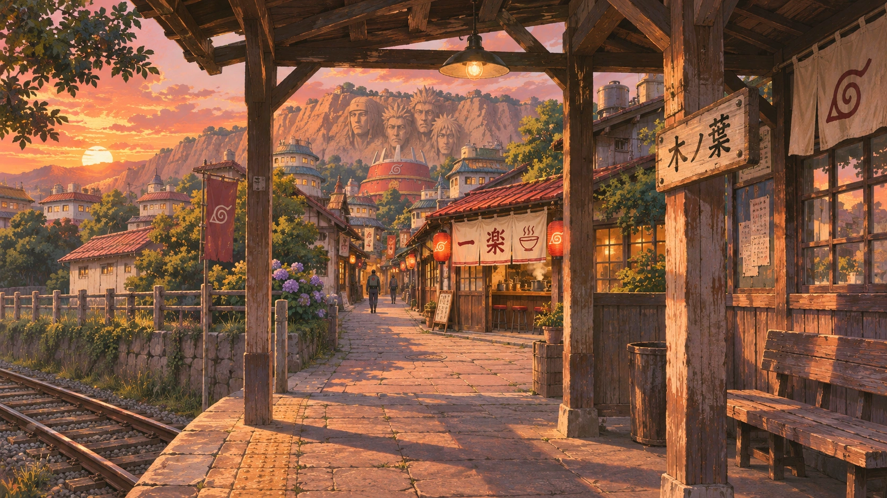
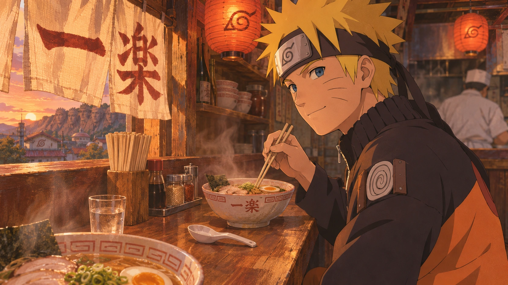

海線
Sea Line
The Train Beyond the Sea
Window seat
Open ticket book
0:15
Look toward aisle
✧
Sea Line
乗車券
×
Naruto
Konoha
木ノ葉
Ichiraku Ramen
Depart for Konoha
Edit memory
Watch status
Choose status
Watching
Finished
On hold
Plan to watch
Episode
A memory to keep
Save memory
Back to ticket